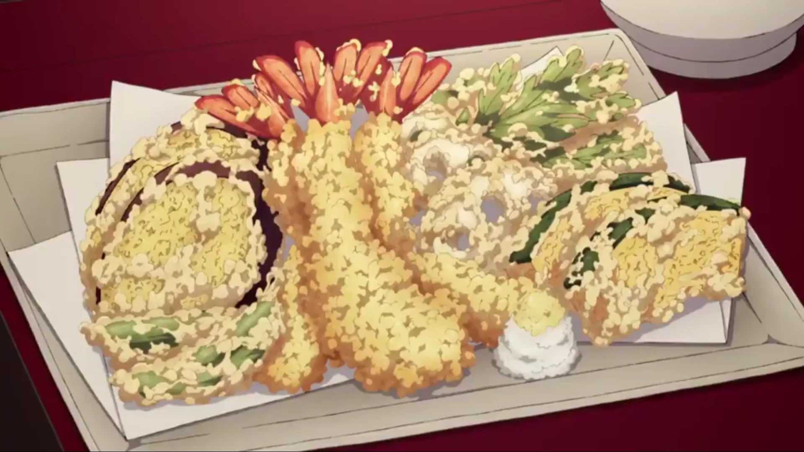
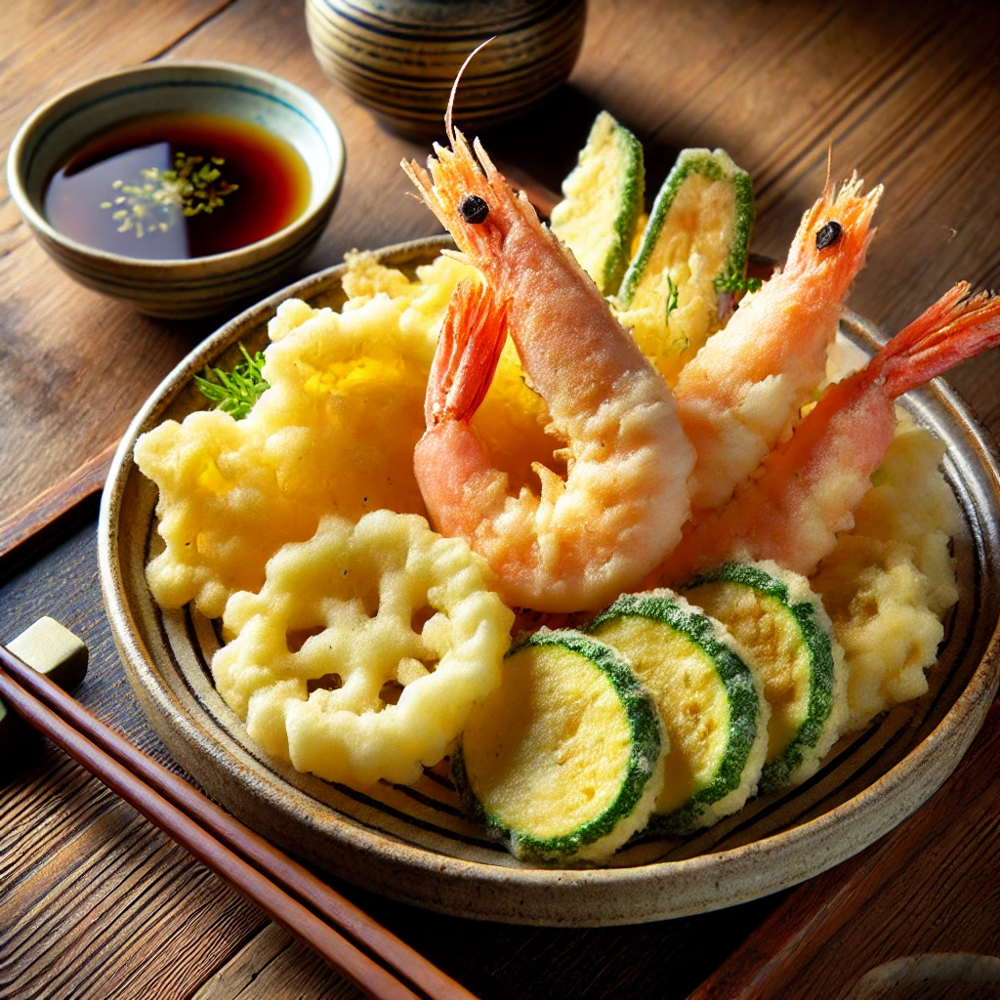

The Best Tempura

Tempura is a classic Japanese dish known for its light and crispy texture. It consists of seafood or vegetables coated in a delicate batter and deep-fried until golden brown. This recipe will guide you through making perfect tempura at home, just like Inosuke from Demon Slayer loves!
Ingredients (2-3 people)
Tempura batter
- 1 cup (120g) all-purpose flour (or tempura flour)
- 1 cup (240ml) ice-cold water
- 1 egg
- ½ teaspoon baking powder (optional, for extra crispiness)
Frying
- 10-12 large shrimp (or vegetables like sweet potato, zucchini, mushrooms)
- 2 cups vegetable oil (for frying)
Dipping sauce (Tentsuyu - optional):
- ½ cup dashi (or water + ½ tsp dashi powder)
- 2 tbsp soy sauce
- 2 tbsp mirin (sweet rice wine)
Steps
- If using shrimp, peel and devein them, leaving the tail on. Make small cuts on the belly side to prevent curling.
- Slice vegetables into thin pieces.
- In a bowl, lightly beat the egg, then add ice-cold water.
- Sift in the flour and baking powder, then mix gently. Do not overmix—lumps are okay! Keeping the batter cold helps create a crisp texture.
- In a deep pan or pot, heat vegetable oil to 350°F (175°C). Test by dropping a bit of batter—if it sizzles and floats, it’s ready.
- Lightly coat shrimp and vegetables in flour, then dip into the batter.
- Carefully place them in the hot oil. Fry for about 2 minutes for shrimp and 3-4 minutes for vegetables.
- Remove and drain on a paper towel.
- In a small pot, combine dashi, soy sauce, and mirin. Heat until warm.
- Serve the crispy tempura with the dipping sauce and enjoy it while hot!
